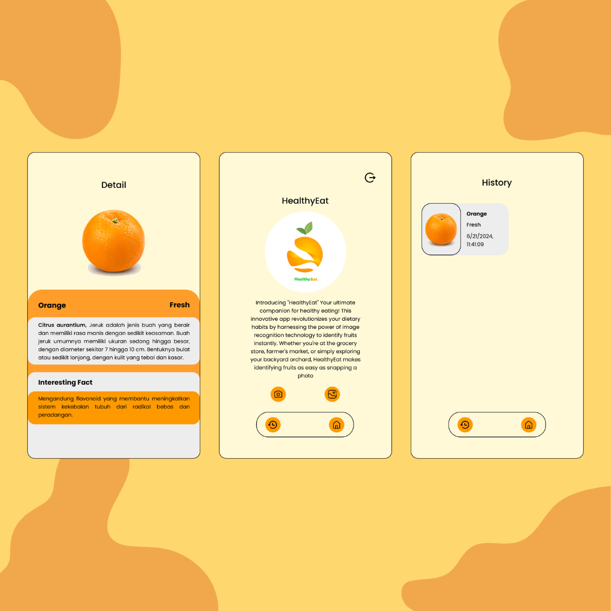

Proyek

Es Teh Soeltan
Teks yang sangat panjang sekali pun akan dipotong otomatis menjadi hanya tiga baris saja agar kartu tetap terlihat rapi dan tidak menjadi terlalu panjang ke bawah. hahafsahafdahfdfhdhshdsg sdsfgadajagd adahsadjhafdajhda adagh

HealthyEat
Teks yang sangat panjang sekali pun akan dipotong otomatis menjadi hanya tiga baris saja agar kartu tetap terlihat rapi dan tidak menjadi terlalu panjang ke bawah. hahafsahafdahfdfhdhshdsg sdsfgadajagd adahsadjhafdajhda adagh
Redesign Viu App
Teks yang sangat panjang sekali pun akan dipotong otomatis menjadi hanya tiga baris saja agar kartu tetap terlihat rapi dan tidak menjadi terlalu panjang ke bawah. hahafsahafdahfdfhdhshdsg sdsfgadajagd adahsadjhafdajhda adagh